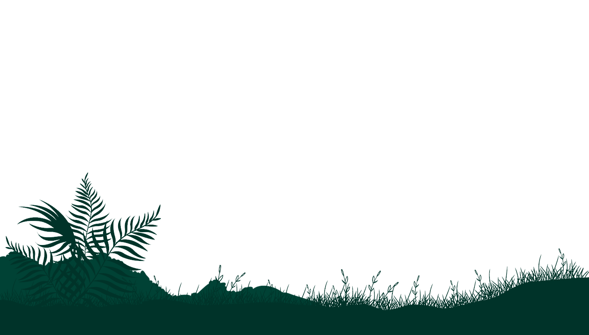
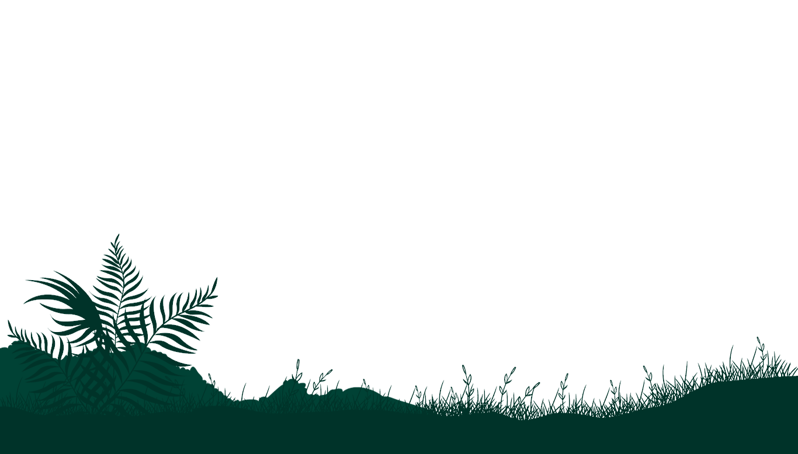
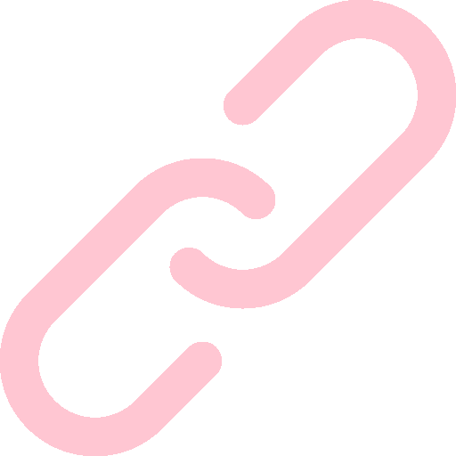

About Me
justine.xue03@gmail.com | 0411030887
Tech Enthusiast. Problem Solver. Effective Communicator.
Hi, I'm Justine—a software engineering student at the University of Sydney and a part-time Technology Cadet.
I thrive on
challenges

, have a deep love of learning and I'm crazy about exciting new tech frontiers of quantum computing, cybersecurity and AI.
Experience & Activities
Technology Cadet
UBS Investment Bank, Sydney
2022 - Present
Led a frontend Angular/Typescript tech refresh and functionality upgrade of a Fixed Income configuration platform in Agile workflow. Integrated refreshed UI with Java backend
Granted and advised clients and internal users with technical solutions. Successfully resolved 500+ incidents for clients within a fortnight across UBS Neo research and trading platform with 50k+ users.
Frontend
ML/AI
Scripting
Computer Science Society Executive
University of Sydney
2022 - Present
Organised computing society events, actively promoted SYNCS to first-years, directed diversity and inclusion initiatives, delivered 5k for student development
Developed and hosted a flagship diversity night event for the society
Leadership
Communication
Achievements
Awards
Honourable Mention for 2022 UBS Hackathon
Honourable Mention for 2021 VAST Competition [Visual Analytics Science and Technology]
Gold Duke of Edinburgh Award
Certifications
High Distinction in ASCA Certificate of Speech
Red Cross Mental Health First Aid
Skills
Ranked by Proficiency
Python, Java, C, Agile, Angular
R, Excel, HTML, CSS, Gradle, Typescript
C#, Assembly, React, Maven
Languages
English (native)
Mandarin Chinese (Bilingual/professional proficiency)
Projects
Space Invaders
With the use of 10 Java design patterns, the classic Space Invaders game was recreated utilising Java, Gradle, and JavaFX, allowing a user to play using arrow keys, as well as bonus powerups and special features.
Education
University of Sydney
BA of Software Engineering (Honours)
2022 - 2025
Distinction 80.1 WAM, Dalyell Scholar (High Achievers), Student Representative
Ravenswood College
International Baccalaureate
Graduated 2021
Dux, 99.75 ATAR, Class Dux in Physics, Literature, Latin, Drama Captain